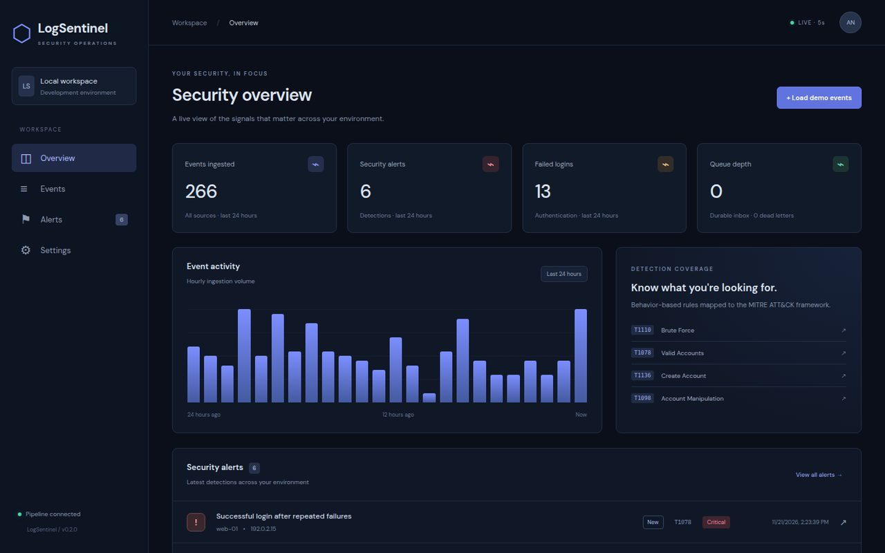
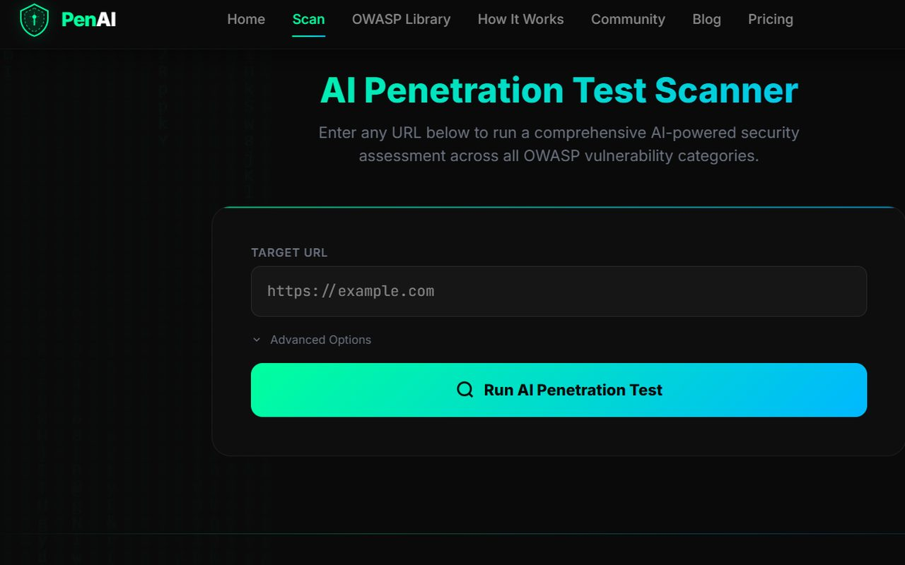
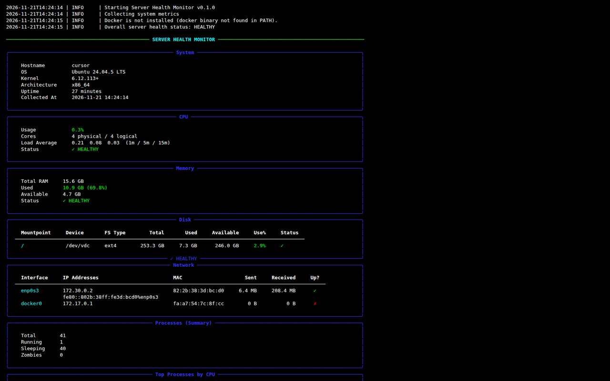

Secure the pipeline
Catch vulnerable images and leaked secrets before they reach production.
GitHub Actions · Trivy · gitleaks
BASED IN MOROCCO / WORKING EVERYWHERE
DevSecOps & Cybersecurity Engineer
I secure your pipelines and servers before attackers find the gaps.
01 / WHAT I DO
From your first commit
to your production servers.
Catch vulnerable images and leaked secrets before they reach production.
GitHub Actions · Trivy · gitleaks
Lock down Linux and Docker environments. Know what’s healthy and what needs attention.
Linux · Docker · Health checks
Assess web applications against the OWASP Top 10, with actionable remediation.
OWASP Top 10 · OWASP ZAP
Build detection rules that connect suspicious activity to real attacker techniques.
SIEM · MITRE ATT&CK
02 / SELECTED WORK

DETECTION ENGINEERING
A mini SIEM turning Linux and Windows/Sysmon logs into MITRE ATT&CK-mapped detections, with a React SOC dashboard.
Normalizes auth, syslog, and JSONL events. Detects failed-login spikes, success after repeated failures, and account or privilege changes. SQLite or OpenSearch storage, Docker Compose, and GitHub Actions tests.

APPLICATION SECURITY
Authorized OWASP ZAP scans, translated into clear findings and AI-assisted remediation reports.
Express API orchestrating spider, passive, and active scans. MongoDB and JWT authentication, severity labels, a 0–100 assessment score, and PDF or JSON exports.

INFRASTRUCTURE RELIABILITY
A Python CLI for a clear view of server health, from system resources to systemd services and Docker.
Typer and Rich CLI checking CPU, memory, disk, network, and processes. HEALTHY, WARNING, or CRITICAL ratings; terminal or JSON output and exit codes for cron/CI. Non-root Docker image and GitHub Actions CI.
03 / THE TOOLKIT
Practical tools.
Security-first workflows.
04 / CERTIFICATIONS
Each credential links
back to the issuer.
05 / JOURNEY
[Education · Oct 2026 — Present]
DEVOPS_LICENCE
École High-Tech, Rabat. In progress.
[Experience · 2024 — Present]
WEB_DEVELOPMENT
Independent work. Websites and web applications, from requirements analysis through to delivery.
[Experience · 2025 — 2026]
PROJECT_COORDINATION
Collaborative projects. Coordinating tasks, follow-up, and communication within the team.
[Internship · 2025 — 2026]
INTERNSHIP
Internship.
[Education · Oct 2024 — 2026]
COMPUTER_DEVELOPMENT
Geniuskills, a private vocational training institution.
[Internship · 2024 — 2025]
INTERNSHIP
Internship.
[Experience · 2023]
DIGITAL_MARKETING
Independent work. Promotion of online services, digital visibility, and client relations.
[Security · Nov 2026]
SECURITY_CERTIFICATIONS
CCEP, CTIGA, and CLLMSE from Red Team Leaders. Application Security Foundations Level 1, Secure Coding, and Security Headers from Semgrep. Fundamentals of DevOps on AWS from Simplilearn.
View certifications[Projects · 2025 — 2026]
SECURITY_PROJECTS
PenAI runs authorized OWASP ZAP scans and AI remediation reports. LogSentinel is a mini SIEM with MITRE ATT&CK detections. Linux Server Health Monitor checks server health from the command line.
View projects06 / LET’S WORK TOGETHER
Have a pipeline to secure or a server to harden?
Let’s talk about what you’re building.